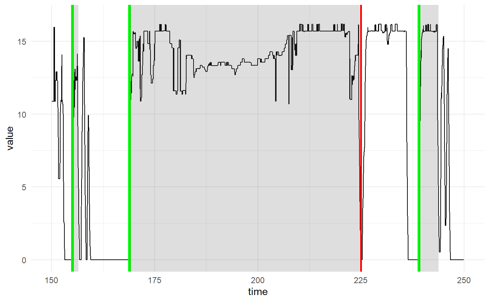

onset-search.RmdFirstly we clear the speeds of any unreal ones
obj <- remove_unreal_speeds(obj, type = "std", cutoff = 3, total_recalculate = TRUE)
plot_speed(obj) + xlim(100,150)And then we smooth it
There are several options to onset searching. Let’s start with the simple every time it is above certain threshold and for at least 1 s
onsets <- search_onsets(obj, speed_threshold = 5, min_duration = 2)
plot_speed(obj) +
geom_navr_timeseries_events(onsets$time_since_start, durations = onsets$duration, color=NA, size=1.5) +
xlim(200,500)Seems to be working well. Now we can modify the onset search to only capture onsets which are preceded by stillness
onsets <- search_onsets(obj, speed_threshold = 5, min_duration = 2, still_duration = 3)
plot_speed(obj) +
geom_navr_timeseries_events(onsets$time_since_start, durations = onsets$duration, color=NA, size=1.5) +
xlim(200,500)And next we can also designate slightly different speeds for still and moving speeds
onsets <- search_onsets(obj, speed_threshold = 5, min_duration = 1, still_duration = 2, still_speed_threshold = 2)
plot_speed(obj) +
geom_navr_timeseries_events(onsets$time_since_start, color="green", size=1.5) +
xlim(200,500)Let’s take a look at the slightly jumpy section between 170 and 250. At time 225, there is a sudden dip which is not considered part of the onset event.
onsets <- search_onsets(obj, speed_threshold = 5, min_duration = 1, still_duration = 1, still_speed_threshold = 2)
plot_speed(obj) +
geom_navr_timeseries_events(onsets$time_since_start, onsets$duration, color="green", size=1.5) +
xlim(150,250) + geom_vline(xintercept=225, size = 1, color = "red")
If we want to include it, we can use the pause_duration parameter and set it to 1 s. Other option might be to better smooth the speeds with smooth_speed.
onsets <- search_onsets(obj, speed_threshold = 5, min_duration = 1, still_duration = 1,
still_speed_threshold = 2, pause_duration = 1)
plot_speed(obj) +
geom_navr_timeseries_events(onsets$time_since_start, onsets$duration, color="green", size=1.5) +
xlim(150,250) + geom_vline(xintercept=225, size = 1, color = "red")